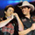

Top Músicas
Real Madrid
Fernando e Sorocaba
Pássaro de Fogo
Paula Fernandes
Your Love is my Drug
Ke$ha
Byba
Justin Biba
Stereo Love
Edward Maya
Meteóros de Pégasus
Luan e Vanessa
Não Mais
Victor e Léo
Bad Romance
Lady Gaga
Aleijado
Lady Gaga
Hey Jude
Paul McCako
TopArtistas

Sidney Magal
Paul McCaco
Victor e Léo
Paula Fernandes
Fernando e Sorocaba
George and Mathews
Luan Santana
Lady Gagá
Justin Byba
Bruno e Macarrão
Comentários
Nuvem de Artistas
Nuvem de Músicas
Últimas Notícias